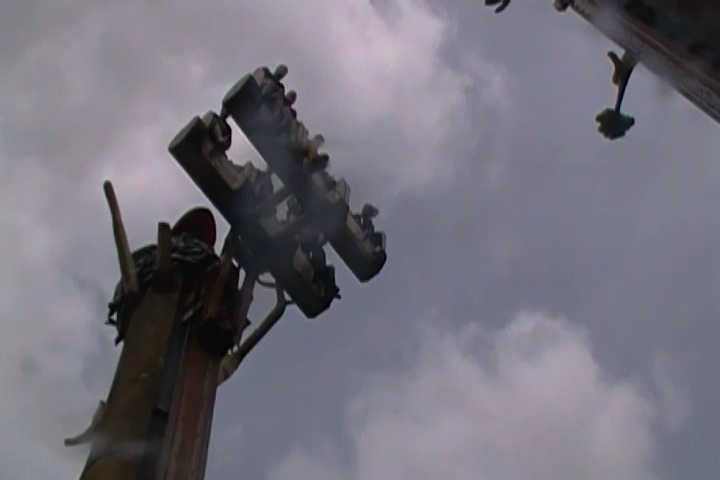
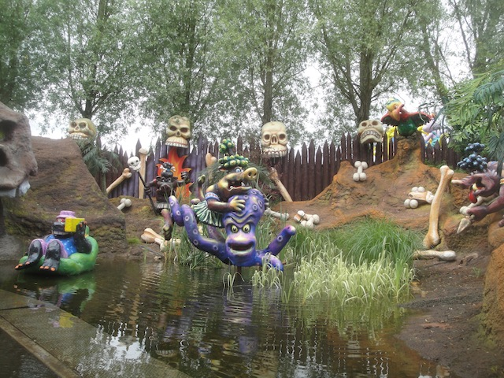
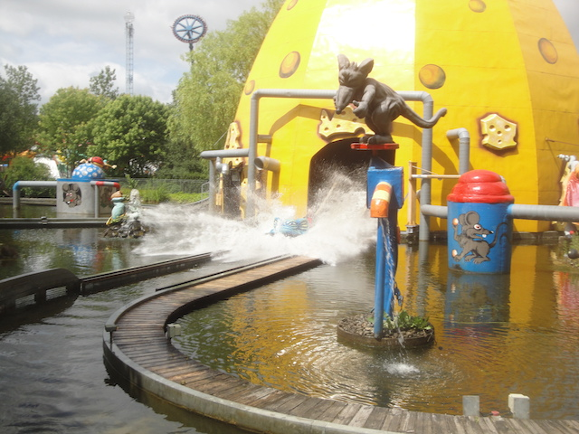
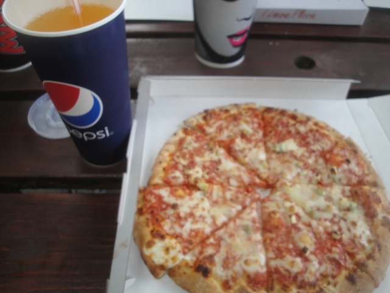
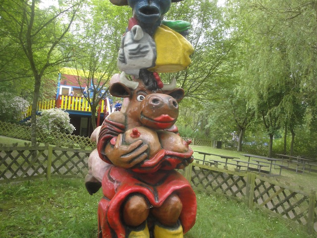

Bon Bon Land may just very well be the strangest park on the planet. No, really. I mean that. It's by far the strangest park I've ever been to and out of all those lists of strange theme parks, the only one I've seen that isn't some weird museum is Bon Bon Land. If you were blind to theming and just looked at each individual ride on its own, it wouldn't seem like anything special. Just an average theme park with a good balance and some decent rides. But it's the theming of this park and the mascots that make the park into the strange WTF park that a lot of enthusiasts are familiar with. I mean, the park mascot is Henry Hundeprut. A farting dog. I mean, who the f*ck needs Mickey Mouse or Bugs Bunny when you can have Henry Hundeprut! And that's just the main character. The side characters include Betty Babs (the cow flashing her boobs), crapping seagull, the racing pig, the hippo in a wet diaper, Crazy Aunt Hen, the snotty bird, the big-eared koala who can stick an log through his head. What the f*ck kind of characters are these!? Do they have some sort of TV Show? I kind of want to figure out if Henry Hundeprut goes on his own adventures. It turns out all these characters are mascots of the BonBon candy company. So yeah. In a way, this is sort of the Knotts Berry Farm or Hersheypark of Europe. Only instead of being connected to jams or chocolate products, it's connected to candy themed to dog turds and rat vomit. But anyways, the park has a decent ride collection as well. They are home to the first ever Eurofighter, as well as several fun rides with wacky and disgusting themes thanks to all the mascots of the park. Trust me. This is one amusement park you're going to want to see in full detail.
Here are the reviews of all the Flat Rides at Bon Bon Land. And they certainly have a few interesting flat rides worth talking about. All right. Let's first talk about what is definetly the most intersting and unique ride in the park. Krage Traeerne. Now if you first look at this ride, you may be wondering what the hell is so special about this ride as...it just looks like one of those kiddy drop towers. Like a super sized Frog Hopper. What the hell is so special about this ride. Well, this ride...you know. I would tell you what the hell the secret of the ride is as it's really not that secret. But apparently people are surprised by it. So I won't spoil the secret that makes the ride so special (At least not in words). Let's just say that if you aren't expecting the surprise of this ride, it'll catch you off guard and possibly scare the sh*t out of you if you think that this isn't possible. They also have a much more traditional drop tower by some random company. It's fun and all. But the one that looks like a Frog Hopper and has the secret surprise is much better. OK. We've talked about both of the parks drop towers. Let's move onto their next best flat ride. Svend Svingarm. This is the parks giant frisbee. And let me tell you. These Giant Frisbees, regardless of who they're made by, are really freaking great. You just get so much swing on those things. And it spins fairly well too. You just are flying on these things. And since Huss can no longer make Giant Frisbees, hopefully Zamperla can take their place because they showed here that they can make a great giant frisbee. OK. Those are the flat rides really worth mentioning. But they have a couple other fun flat rides as well. They have a Disk-O, and it's themed to a giant chicken. Certainly one of the strangest themes to a ride. But hey. It looked fun. They also have a troika, a pirate ship, and some chairswings themed to a turtle that looks fairly nauseous. Knowing Bon Bon Land, he just might puke all over you. ;)

SURPRISE!!! =D
Dark Rides
Bon Bon Land may not really have a solid dark ride collection, as they really only have one dark ride. And it's outdoor. So it's technically not a dark ride. But f*ck it! It counts! It's just like any other dark ride. Only outside. Hey everyone. Do you like "It's a Small World" at the Disney parks? How would you like to ride a version of that, only with characters that instead of sing, do disgusting crap, and every part of the world they represent is hilariously politically incorrect? Well, they have that ride at Bon Bon Land. And it's kind of fun in a...WTF kind of way. Just another enjoyable aspect of Bon Bon Land.

Blugh! This is not how civilized people act! Civilized people make theme parks about dog farts and cow boobs damn it!
Water Rides
Bon Bon Land has two water rides in the park. Neither of them are really that great on their own, but thanks to all the wacky theming that Bon Bon Land has, they're a lot of fun. All right. Let's start out with their log flume. Vandrotten. Or as I like to call it, the Vomiting Rats ride. Yeah. As a log flume itself, it's pretty small and lame. But just the fact that you see these rats eating this garbage and then you go up the lift hill, and you literally get vomited down the drop. Yeah. It's small and the stop is kind of abrupt, but come on! You're being puked down a drop. And then that stuff gets splashed into our boat. EEW!!! All right. Moving onto the other water ride. Baeverrafting. And yeah. It's a rapids ride themed to these hipster beavers. OK. That's not nearly as gross as something like the Dog Fart coaster, or the Rat Vomit log flume. But to be fair, hipsters are kind of scary. =P And to be fair, the beavers on the ride don't seem to be hipsters. They just seem to be getting wood (NO!! NOT IN THAT WAY GOD DAMN IT!!!). And the rapids themselves are pretty fun. There aren't any drops, whirlwinds, or any sort of special effects. But they still are a lot of fun. And hey. This one does have the waterfall walls. Those are always fun. So yeah. They may not be the best water rides ever, but the wacky themes certainly make them worth a ride.

"*groan* I don't feel good. In fact, I feel si--*vomit*"
Dining
OK. I'm not sure what it is about the food at Bon Bon Land, but for some reason, I just really did NOT like the food here. And I don't mean that in the "Oh. It's just typical amusement park crap. Eaten it. Same old food" kind of way when I normally talk about theme park food. Cause I don't dislike most park food. I like it fine. It's just typical and expensive. But this...I'm not sure what it was about it. But I genuinely did not like the food. I know the food I ate was pizza. And something about it just seemed...off. School lunch pizza is better than this. The frozen pizzas you buy at the grocery store are better than this (Hmm. I should have that now). Maybe the food at the other places is better, but I did not like that pizza. Well, to be nice, the park is owned by the Bon Bon candy company. And while I didn't actually eat any Bon Bon Land candy, I'm sure it tastes good. Sorry. You won't be seeing Bon Bon Land on our Top 10 Theme Park Dining Options List anytime soon.

Please don't tell me that Henry Hundeprut cooked this.
Theming and Other Attractions
Here are the reviews of all the other stuff at Bon Bon Land. As far as theming goes, yeah. There's a lot of it at Bon Bon Land. I know normally we don't really talk about the theming that much. But we've been talking about the theming all throughout this review. It's what makes the park noteworthy. It's what makes me people stop and stare. It's what turns a typical kiddy coaster into something you have a blast on solely because of the theming. We've already discussed all the characters. And yeah. This park is themed to farts, boobs, peeing, pooping, vomiting, and everything else you can think of. How can we not constantly talk about such odd and wacky theming like that. It's just...WOW!!! I know Danes are far more relaxed about stuff like that. But a whole theme park just seems...cartoony. The whole place feels like living inside a cartoon. I like that. =) OK. Let's move onto other stuff to do in the park. Well, they have an obstacle course. Kind of tame compared to all the other ones in Europe, but they're still fun. There's also this weird doll exhibit. It may seem like a bore at first because it has nothing to do with nudity or bodily functions. But if you know where to look, there's plenty of oddness to be found inside there. There's a lot of statues you can play around with, but that's more of all that theming I've been talking about constantly.

This is theming inside a theme park.
In Conclusion
Bon Bon Land is a unique and quirky park to say the least. And that's putting it nicely. Because let's face it. Bon Bon Land is easily one of the most f*cked up parks on the planet. And it's not just me saying that. This is a park that constantly gets recognized for its wacky theming and the whole WTF nature of Dog Fart Coasters and Rat Vomit Log Flumes. I mean, this park has been mentioned by Cracked and Mental Floss. It's one of the rare parks that I've been to that non enthusiasts friends of mine will know what the hell I'm talking about and actually care that I've been to this park. Now, it's not like Disney where everyone knows. But people have paid a little bit of attention to Bon Bon Land simply due to just how strange the park is. I mean, I can not think of any other park that feels as much as walking through a cartoon as this place. I know I've seen some criticism that the park isn't nearly as wacky as it used to be, since they definetly toned down on Betty Babs. LAME!!! But hey, as long as they don't turn the Dog Fart Coaster into yet another boring kiddy credit whoring ride, I think I'll be fine. And hey. The park does have some good rides including the first ever Euro Fighter, a giant frisbee, a fun spinner, and a tiny little drop tower with a couple of surprises. So definetly stop by if you're in Denmark and close to Copenhagen. This is one park you'll want to talk about to your friends. It's that kind of a wacky and fun place.
Enthusiast FAQs.
*Are there kiddy coaster restrictions? - Nope. Everyone is welcome to experience Henry Hundepruts farts.
Tips
*Don't ignore the Dog Fart Coaster because its a kiddy coaster. It's awesome! =D
*Don't be an uptight prude and laugh at the toilet humor.